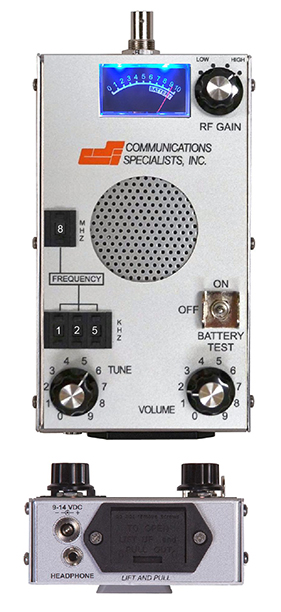

|  |
|
Click on Manuals for complete list of specifications
- Two year warranty with guaranteed 2 week turnaround for both warranty or
non-warranty repairs
- 100% made in the USA at our Orange, Calif. factory
- Exceptional value at $895 for the entire system
- Same day shipping from stock
- Includes AF Antronics F150-3FB three element folding yagi antenna with slide off handle and coax
- Detachable yagi antenna attaches directly to the RX-150 which allows one handed operation
- Supplied with water resistant nylon carrying case with shoulder strap
- Supplied with changeable and rechargeable Lithium-ion batteries for 24 hours of continuous operation
- Supplied with quick charger for charging off 110-220vac, 12vdc, or computer USB port
- Robust metal case designed for heavy field abuse
- Fully synthesized covering 148-152MHz with no gaps, 1kHz channel steps, +/-500Hz fine tuning
- Excellent -150dBm sensitivity to hear the weakest transmitters
- Excellent selectivity to allow close spacing of transmitters
- Great front end filtering to eliminate unwanted interference
- No spurious responses in the entire
148-152MHz band
- Employs a .5ppm TCXO for superior temperature stability with no frequency drift
- Four step attenuator for close-in tracking
- Large full range speaker for great sounding loud audio
- Sensitive, back lighted, signal strength meter to see very small changes in signal strength
- 3.5mm headphone jack
- DC power jack and supplied power cord allow 9-14vdc vehicle use without internal battery
- Simple intuitive operation
|